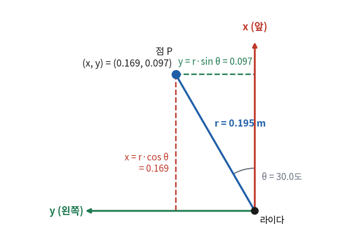
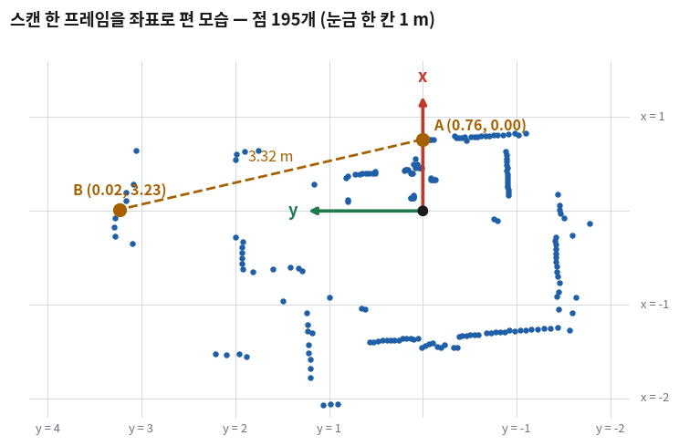
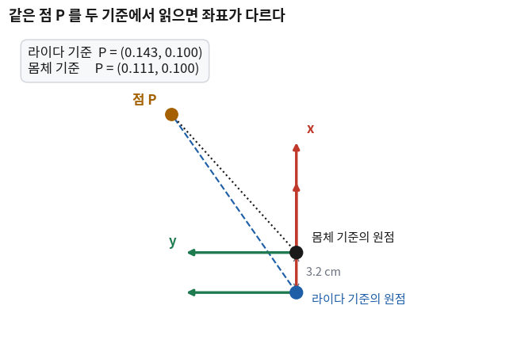
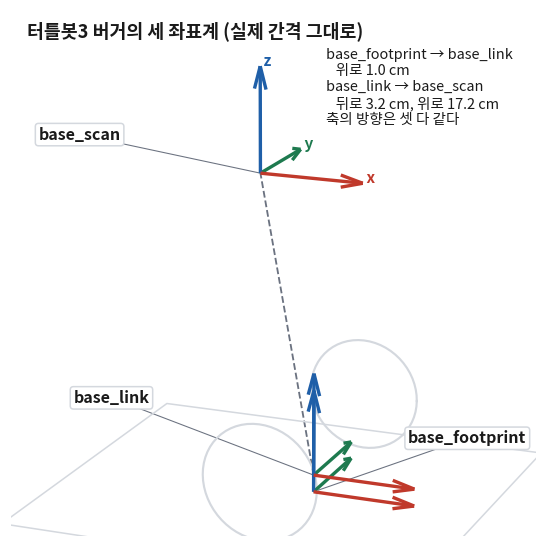
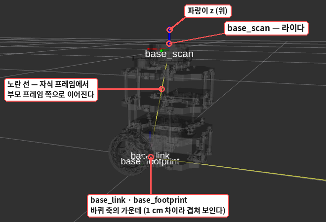
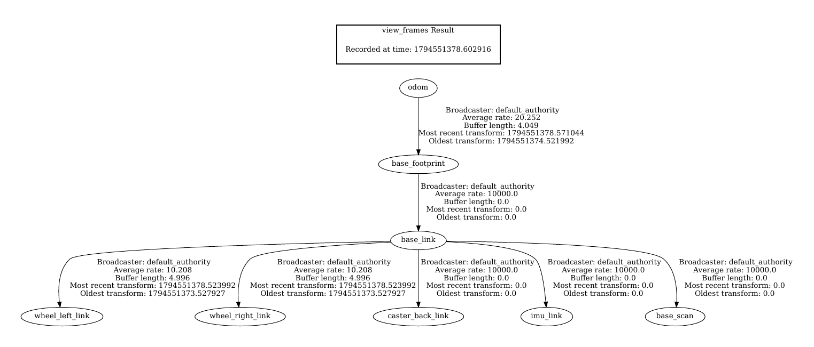

좌표 변환과 TF2
- 라이다가 준 「이 방향으로 몇 m」를 평면 위의 점 (x, y)로 어떻게 바꾸나?
- 같은 점인데 기준을 바꾸면 좌표가 달라진다. 그 바꾸는 식을 행렬 하나로 어떻게 적나?
- 로봇에는 어떤 좌표계가 있고, 그 사이의 관계는 누가 알고 있나?
- 코드에서 「이 점을 저 좌표계 기준으로」를 어떻게 부탁하고, 실패하면 어떻게 하나?
24회에서 스캔의 값 하나가 「어느 방향으로 몇 m」인지를 읽어 냈다. 그런데 콘 트랙에서 알아야 하는 것은 한 방향의 거리가 아니다. 왼쪽 콘과 오른쪽 콘이 어디에 있고 그 사이의 가운데가 어디인지다. 그러려면 스캔의 값을 평면 위의 점으로 펴야 한다.
점으로 펴고 나면 다음 물음이 생긴다 — 그 점은 어디를 원점으로 한 좌표인가? 라이다는 로봇의 한가운데에 있지 않다.
오늘은 좌표를 다른 기준으로 옮기는 식을 행렬로 세우고, 그 일을 대신 해 주는 ROS의 장치 TF2를 써 본다.
24회의 cone_drive 패키지 안에 실행 파일 scan_points를 하나 더 만들어 두 단계로 키운다 — 점으로 펴고(v1), TF2로 옮긴다(v2).
바퀴는 오늘 돌리지 않는다. 26회에서 이것을 콘 주행으로 잇는다.
① 라이다 거리를 2차원 좌표로 (v1) 🔴 사람이 확인한다
24회 ④절에서 이 로봇은 0도 방향 0.76m에, 90도 방향 3.2m에 무언가가 있었다. 이 둘 사이는 얼마나 떨어져 있을까? 두 거리를 빼면 3.2 − 0.76 = 2.44m다. 그런데 둘이 같은 방향에 있을 때만 거리의 차가 간격이 된다. 한쪽은 앞에, 한쪽은 왼쪽에 있으니 둘 사이는 비스듬한 선이다. 「방향과 거리」로 적은 위치끼리는 빼서 간격을 구할 수 없다.
1-1 극좌표와 직교좌표
| 이름 | 점 하나를 무엇으로 적나 | 무엇에 편한가 |
|---|---|---|
| 극좌표 (polar coordinates) | 거리 r 과 각도 θ — 라이다가 재는 방식 그대로 | 「이 방향에 뭐가 있나」 |
| 직교좌표 (Cartesian coordinates) | 서로 직각인 두 축 위의 값 x 와 y | 두 점 사이의 간격, 가운데 점, 기준 옮기기 |
같은 점을 적는 두 가지 방법이고 어느 쪽이 더 옳은 것은 아니다. 라이다는 돌면서 재므로 극좌표로 내놓고, 점끼리 견주는 계산은 직교좌표에서 해야 뺄셈이 뜻을 가진다. 그래서 받자마자 직교좌표로 바꿔 놓고 시작한다.
1-2 ROS 좌표 규약
x와 y로 적으려면 어느 쪽이 x이고 어느 쪽이 +인지부터 정해야 한다. ROS는 이것을 약속으로 정해 두었다.
| 무엇 | 약속 | 24회에서 본 것과의 연결 |
|---|---|---|
| x | 로봇의 앞이 + | 각도 0도의 방향 |
| y | 로봇의 왼쪽이 + | 각도 90도의 방향 |
| z | 위가 + | 바닥을 달리는 로봇은 거의 쓰지 않는다 |
| 회전 | 위에서 내려다봤을 때 반시계 방향이 + | angular.z가 +이면 왼쪽으로 돈다 (23회) |
| 단위 | 길이 m · 각도 rad · 시간 s | angle_increment가 rad였던 까닭 |
🆕 처음 나오는 이름
- REP
- ROS Enhancement Proposal의 약자. ROS 커뮤니티가 합의한 표준을 번호를 붙여 모아 둔 문서들이다. 위의 약속은 REP 103에 적혀 있다.
1-3 변환식
거리 r, 각도 θ인 점을 1-2의 축 위에 놓으면 직각삼각형이 하나 생긴다. 빗변이 r이고, x축 쪽 변이 x, 그것과 직각인 변이 y다.
θ = angle_min + i × angle_increment (24회)
x = r × cos θ
y = r × sin θ
숫자를 넣어 본다. 인덱스 18, angle_min 0.0024 rad, angle_increment 0.02896 rad, 거리 0.195 m.
θ = 0.0024 + 18 × 0.02896 = 0.5237 rad (= 30.0도)
x = 0.195 × cos(0.5237) = 0.195 × 0.866 = 0.169 m 앞으로 16.9 cm
y = 0.195 × sin(0.5237) = 0.195 × 0.500 = 0.097 m 왼쪽으로 9.7 cm각도가 0~180도 사이이면 sin이 +라서 y가 +, 180~360도 사이이면 y가 −가 된다. 좌우는 따로 따지지 않아도 부호로 나온다.
1-4 1단계 (v1) — 스캔 전체를 점으로 편다
24회의 cone_drive 패키지에 실행 파일을 하나 더 만든다. ~/ros_ws/src/cone_drive/src/scan_points.cpp를 새로 만들고, CMakeLists.txt에 석 줄을 더한다.
# 만든 실행 파일을 ros2 run 이 찾는 자리에 설치한다
install(TARGETS cone_drive
DESTINATION lib/${PROJECT_NAME})# 25회 — 실행 파일 scan_points. LaserScan 을 받아 점의 좌표(x, y)로 편다
add_executable(scan_points src/scan_points.cpp)
target_link_libraries(scan_points PRIVATE
rclcpp::rclcpp ${sensor_msgs_TARGETS})
# 만든 실행 파일을 ros2 run 이 찾는 자리에 설치한다
install(TARGETS cone_drive scan_points
DESTINATION lib/${PROJECT_NAME})점 하나를 담을 타입을 만들고, 1-3의 식 두 줄을 함수로 옮긴다.
// 평면 위의 점 하나 (m). x 는 앞, y 는 왼쪽
struct Point
{
double x;
double y;
}; // 스캔의 쓸 수 있는 값을 전부 점으로 편다 — x = r·cos θ, y = r·sin θ
std::vector<Point> to_points(const sensor_msgs::msg::LaserScan & scan) const
{
std::vector<Point> points;
points.reserve(scan.ranges.size()); // 많아야 이만큼이다 — 재할당을 피한다 (12회)
for (std::size_t i = 0; i < scan.ranges.size(); ++i) {
const double r = scan.ranges[i];
if (!is_valid(scan.ranges[i])) {
continue;
}
const double theta = scan.angle_min + i * scan.angle_increment; // rad — cos · sin 은 라디안을 받는다
points.push_back(Point{r * std::cos(theta), r * std::sin(theta)});
}
return points;
}
거르기가 변환보다 먼저다. NaN에 cos을 곱하면 NaN인 점이 생기고, 그 점은 뒤의 모든 계산을 NaN으로 물들인다. is_valid는 24회 것 그대로다.
콜백에서는 펴진 점들 가운데 라이다에서 가장 가까운 것을 13회의 std::min_element로 찾아 찍는다.
// 원점(라이다)에서 가장 가까운 점 — 거리는 std::hypot(x, y)
const auto nearest = std::min_element(
points.begin(), points.end(),
[](const Point & a, const Point & b) { return std::hypot(a.x, a.y) < std::hypot(b.x, b.y); });🆕 이 코드에서 처음 나오는 것
std::cos(theta)·std::sin(theta)<cmath>의 삼각함수다. 인자는 라디안이다. 30도의 cos을 구하려고std::cos(30)이라고 쓰면 「30 라디안」의 cos이 나온다 — 오류 없이 엉뚱한 값이다. 메시지의 각도가 이미 rad라서angle_min + i * angle_increment를 그대로 넣으면 된다.std::hypot(a, b)- √(a² + b²)를 돌려준다. 직각삼각형의 빗변(hypotenuse)에서 온 이름이다. 원점에서 점 (x, y)까지의 거리가
std::hypot(x, y)다. struct Point·Point{a, b}- 9회의 클래스와 같은 것인데 멤버가 처음부터
public이다. 함수 없이 값 두 개를 묶기만 할 때struct를 쓴다.Point{a, b}는 x에 a, y에 b를 넣은 점 하나를 그 자리에서 만든다.
전체 코드 — cone_drive/ (scan_points 1단계 · v1. cone_drive.cpp · package.xml 은 24회 v5 그대로)
빌드해서 돌리는 법: cd ~/ros_ws && colcon build --packages-select cone_drive && source install/setup.bash && ros2 run cone_drive scan_points
// 25회 scan_points — v1 (1단계: 거리와 각도를 좌표 x, y 로 편다 — 가장 가까운 점을 찍는다)
#include <algorithm>
#include <cmath>
#include <memory>
#include <vector>
#include "rclcpp/rclcpp.hpp"
#include "sensor_msgs/msg/laser_scan.hpp"
// 평면 위의 점 하나 (m). x 는 앞, y 는 왼쪽
struct Point
{
double x;
double y;
};
class ScanPoints : public rclcpp::Node
{
public:
ScanPoints()
: Node("scan_points")
{
// 믿을 수 있는 거리 범위 — 라이다 사양표에서 가져온다 (24회. LDS-02 기준)
this->declare_parameter("range_min", 0.16);
this->declare_parameter("range_max", 8.0);
range_min_ = this->get_parameter("range_min").as_double();
range_max_ = this->get_parameter("range_max").as_double();
scan_sub_ = this->create_subscription<sensor_msgs::msg::LaserScan>(
"/scan", rclcpp::SensorDataQoS(),
[this](sensor_msgs::msg::LaserScan::ConstSharedPtr msg) { on_scan(msg); });
}
private:
// /scan 이 올 때마다 불린다 — 점으로 펴고, 가장 가까운 점을 1초에 한 번 찍는다
void on_scan(sensor_msgs::msg::LaserScan::ConstSharedPtr msg)
{
const std::vector<Point> points = to_points(*msg);
if (points.empty()) {
RCLCPP_WARN_THROTTLE(this->get_logger(), *this->get_clock(), 1000, "쓸 수 있는 점이 없습니다");
return;
}
// 원점(라이다)에서 가장 가까운 점 — 거리는 std::hypot(x, y)
const auto nearest = std::min_element(
points.begin(), points.end(),
[](const Point & a, const Point & b) { return std::hypot(a.x, a.y) < std::hypot(b.x, b.y); });
RCLCPP_INFO_THROTTLE(this->get_logger(), *this->get_clock(), 1000,
"점 %zu개 · 가장 가까운 점 x = %.3f m, y = %.3f m (거리 %.3f m)",
points.size(), nearest->x, nearest->y, std::hypot(nearest->x, nearest->y));
}
// 쓸 수 있는 거리인가 — NaN · inf 가 아니고 사양 범위 안에 있다 (24회)
bool is_valid(float r) const
{
return std::isfinite(r) && r >= range_min_ && r <= range_max_;
}
// 스캔의 쓸 수 있는 값을 전부 점으로 편다 — x = r·cos θ, y = r·sin θ
std::vector<Point> to_points(const sensor_msgs::msg::LaserScan & scan) const
{
std::vector<Point> points;
points.reserve(scan.ranges.size()); // 많아야 이만큼이다 — 재할당을 피한다 (12회)
for (std::size_t i = 0; i < scan.ranges.size(); ++i) {
const double r = scan.ranges[i];
if (!is_valid(scan.ranges[i])) {
continue;
}
const double theta = scan.angle_min + i * scan.angle_increment; // rad — cos · sin 은 라디안을 받는다
points.push_back(Point{r * std::cos(theta), r * std::sin(theta)});
}
return points;
}
double range_min_ = 0.0; // 파라미터 range_min 에서 읽는다 (m)
double range_max_ = 0.0; // 파라미터 range_max 에서 읽는다 (m)
rclcpp::Subscription<sensor_msgs::msg::LaserScan>::SharedPtr scan_sub_;
};
int main(int argc, char ** argv)
{
rclcpp::init(argc, argv);
auto node = std::make_shared<ScanPoints>();
rclcpp::spin(node); // 구독 콜백은 이 안에서 불린다
rclcpp::shutdown();
return 0;
}cmake_minimum_required(VERSION 3.8)
project(cone_drive)
if(CMAKE_COMPILER_IS_GNUCXX OR CMAKE_CXX_COMPILER_ID MATCHES "Clang")
add_compile_options(-Wall -Wextra -Wpedantic)
endif()
# find dependencies
find_package(ament_cmake REQUIRED)
find_package(rclcpp REQUIRED)
find_package(sensor_msgs REQUIRED)
find_package(geometry_msgs REQUIRED)
# 24회 — 실행 파일 cone_drive. LaserScan(sensor_msgs)을 받는다
# 24회 5단계 — TwistStamped(geometry_msgs)를 보낸다
add_executable(cone_drive src/cone_drive.cpp)
target_link_libraries(cone_drive PRIVATE
rclcpp::rclcpp ${sensor_msgs_TARGETS} ${geometry_msgs_TARGETS})
# 25회 — 실행 파일 scan_points. LaserScan 을 받아 점의 좌표(x, y)로 편다
add_executable(scan_points src/scan_points.cpp)
target_link_libraries(scan_points PRIVATE
rclcpp::rclcpp ${sensor_msgs_TARGETS})
# 만든 실행 파일을 ros2 run 이 찾는 자리에 설치한다
install(TARGETS cone_drive scan_points
DESTINATION lib/${PROJECT_NAME})
if(BUILD_TESTING)
find_package(ament_lint_auto REQUIRED)
# the following line skips the linter which checks for copyrights
# comment the line when a copyright and license is added to all source files
set(ament_cmake_copyright_FOUND TRUE)
# the following line skips cpplint (only works in a git repo)
# comment the line when this package is in a git repo and when
# a copyright and license is added to all source files
set(ament_cmake_cpplint_FOUND TRUE)
ament_lint_auto_find_test_dependencies()
endif()
ament_package()⌨ 빌드하고 돌리기 — bringup이 떠 있는 채로, 터미널 2에서
$ cd ~/ros_ws
$ colcon build --packages-select cone_drive
$ ros2 run cone_drive scan_points패키지는 cone_drive 그대로이고 실행 파일 이름이 scan_points다(17회 — 패키지 하나에 실행 파일 여럿).
$ ros2 run cone_drive scan_points
[INFO] [1794550528.511304476] [scan_points]: 점 195개 · 가장 가까운 점 x = 0.143 m, y = 0.101 m (거리 0.175 m)
[INFO] [1794550529.551192701] [scan_points]: 점 195개 · 가장 가까운 점 x = 0.143 m, y = 0.099 m (거리 0.174 m)
[INFO] [1794550530.611134827] [scan_points]: 점 194개 · 가장 가까운 점 x = 0.142 m, y = 0.100 m (거리 0.174 m)
[INFO] [1794550531.651417575] [scan_points]: 점 187개 · 가장 가까운 점 x = 0.144 m, y = 0.100 m (거리 0.175 m)값 215개쯤 가운데 190개 안팎이 점이 됐다. 가장 가까운 것은 앞으로 14cm, 왼쪽으로 10cm 자리에 있다. 「35도 방향 17.5cm」보다 손으로 가리키기 쉬운 말이 됐다.

1-5 두 점 사이의 거리
이 절의 처음 물음으로 돌아간다. 0도 쪽의 점 A와 90도 쪽의 점 B 사이는 얼마인가? 이제 둘 다 좌표가 있다.
d = √( (x₁ − x₂)² + (y₁ − y₂)² ) C++ 에서는 std::hypot(x1 - x2, y1 - y2)
A = (0.763, 0.002) 0도 방향, 거리 0.763 m
B = (0.015, 3.234) 90도 방향, 거리 3.234 m
d = √( 0.748² + 3.232² ) = √11.006 = 3.318 m② 2차원 좌표 변환 — 행렬식 🔴 사람이 이해한다
①절의 좌표는 전부 라이다를 원점으로 한 것이다. 그런데 로봇이 도는 중심은 라이다가 아니라 두 바퀴 사이의 가운데다. 터틀봇3 버거의 라이다는 그 가운데보다 3.2cm 뒤에 달려 있다. 「콘이 내 왼쪽 30cm에 있다」를 로봇 몸체를 기준으로 말하려면 어떻게 해야 할까?
2-1 좌표계
좌표계(coordinate frame)는 원점 하나와 축의 방향을 정해 놓은 기준이다. ROS에서는 흔히 줄여서 프레임이라고 부른다. 같은 점이라도 어느 좌표계에서 읽느냐에 따라 좌표가 달라진다. 점이 움직인 것이 아니라 읽는 기준이 다른 것이다. 한 좌표계의 좌표를 다른 좌표계의 좌표로 바꾸는 일을 좌표 변환(coordinate transformation)이라고 한다.

2-2 회전과 평행이동
평면에서 두 좌표계는 두 가지로만 어긋날 수 있다. 축이 돌아가 있거나(각 φ), 원점이 떨어져 있거나(tx, ty). 그래서 좌표 변환도 그 둘을 차례로 하면 된다. 여기서 φ와 (tx, ty)는 옮겨 갈 좌표계에서 본, 원래 좌표계의 방향과 자리다.
(1) 회전 — 축이 φ 만큼 돌아가 있으면 그만큼 돌린다
⎡ x′ ⎤ ⎡ cos φ −sin φ ⎤ ⎡ x ⎤ x′ = x·cos φ − y·sin φ
⎣ y′ ⎦ = ⎣ sin φ cos φ ⎦ ⎣ y ⎦ 풀면 y′ = x·sin φ + y·cos φ
(2) 평행이동 — 원점이 (tx, ty) 떨어져 있으면 그만큼 민다
⎡ x″ ⎤ ⎡ x′ ⎤ ⎡ tx ⎤
⎣ y″ ⎦ = ⎣ y′ ⎦ + ⎣ ty ⎦
한 줄로 p″ = R(φ)·p + t가운데의 2×2 행렬 R(φ)를 회전 행렬(rotation matrix)이라고 한다. 첫 열 (cos φ, sin φ)는 「원래 x축이 새 좌표계에서 가리키는 방향」이고, 둘째 열 (−sin φ, cos φ)는 「원래 y축이 가리키는 방향」이다. 회전한 뒤에 민다 — 순서가 있다. 거꾸로 하면 민 것까지 같이 돌아가 다른 자리가 된다.
2-3 동차좌표와 변환 행렬
좌표계가 둘이면 2-2로 끝난다. 그런데 로봇에는 좌표계가 여럿이다 — 라이다, 몸체, 출발한 자리. 라이다 → 몸체 → 출발한 자리로 두 번, 세 번 이어서 옮기려면 돌리고 밀고, 또 돌리고 밀어야 한다. 이것을 곱하기 하나로 할 수는 없을까?
점 (x, y) 끝에 1을 하나 덧붙여 (x, y, 1)로 적으면 회전과 평행이동을 3×3 행렬 하나에 함께 담을 수 있다.
⎡ x″ ⎤ ⎡ cos φ −sin φ tx ⎤ ⎡ x ⎤
⎢ y″ ⎥ = ⎢ sin φ cos φ ty ⎥ ⎢ y ⎥ T = ⎡ R t ⎤
⎣ 1 ⎦ ⎣ 0 0 1 ⎦ ⎣ 1 ⎦ ⎣ 0 1 ⎦
첫 줄을 풀면 x″ = x·cos φ − y·sin φ + tx ← 2-2의 (1)과 (2)를 합친 것과 같다이렇게 1을 덧붙여 적는 좌표를 동차좌표(homogeneous coordinates)라고 하고, 회전과 평행이동을 한데 담은 행렬 T를 변환 행렬이라고 한다. 덧붙인 1이 하는 일은 하나다 — 더하기(평행이동)를 곱하기 안으로 끌어들인다. 그러면 변환을 잇는 것이 행렬을 곱하는 것이 된다.
T(라이다 → 출발한 자리) = T(몸체 → 출발한 자리) · T(라이다 → 몸체) 뒤에 할 것을 왼쪽에 쓴다2-4 숫자를 넣어 본다
터틀봇3의 몸체에서 본 라이다는 돌아가지 않았고(φ = 0), 3.2cm 뒤에 있다(tx = −0.032, ty = 0). 그림의 점 P를 옮긴다.
⎡ 1 0 −0.032 ⎤ ⎡ 0.143 ⎤ ⎡ 0.143 − 0.032 ⎤ ⎡ 0.111 ⎤
⎢ 0 1 0 ⎥ ⎢ 0.100 ⎥ = ⎢ 0.100 ⎥ = ⎢ 0.100 ⎥ 몸체 기준 P = (0.111, 0.100)
⎣ 0 0 1 ⎦ ⎣ 1 ⎦ ⎣ 1 ⎦ ⎣ 1 ⎦라이다가 뒤에 있으니, 라이다가 「14.3cm 앞」이라고 본 점은 몸체 가운데에서는 「11.1cm 앞」이다. 부호가 헷갈릴 때는 말로 확인한다 — 뒤에서 본 것이 더 멀리 보인다. 회전이 들어가는 경우도 하나 해 본다. 라이다를 반 바퀴(180도) 돌려 달았다면 cos 180° = −1, sin 180° = 0이다.
⎡ −1 0 −0.032 ⎤ ⎡ 0.762 ⎤ ⎡ −0.762 − 0.032 ⎤ ⎡ −0.794 ⎤
⎢ 0 −1 0 ⎥ ⎢ 0.006 ⎥ = ⎢ −0.006 ⎥ = ⎢ −0.006 ⎥ 라이다가 「앞」이라고 본 것이 실제로는 로봇의 뒤에 있다
⎣ 0 0 1 ⎦ ⎣ 1 ⎦ ⎣ 1 ⎦ ⎣ 1 ⎦③ TF2 🔴 사람이 이해한다
로봇의 좌표계 사이의 관계는 누가 관리할까? 라이다는 라이다를 기준으로 재고, 바퀴는 바퀴 축을 기준으로 돌고, 「얼마나 왔나」는 출발한 자리를 기준으로 센다. 노드마다 이 관계를 숫자로 따로 적어 두면 같은 숫자가 여기저기 흩어지고, 하나만 고쳐도 서로 어긋난다. ROS에서는 이 관계를 한곳에 모아 두고 누구나 물어볼 수 있게 한다.
| 용어 | 뜻 |
|---|---|
| 프레임 (frame) | 좌표계 하나. ROS에서는 이름(글자)으로 부른다 — base_link, base_scan, odom |
| 변환 (transform) | 두 프레임 사이의 관계 — 한쪽에서 본 다른 쪽의 자리(평행이동)와 방향(회전). ②절의 변환 행렬을 3차원으로 넓힌 것이다 |
| TF 트리 (TF tree) | 프레임들이 부모 – 자식으로 이어진 모양. 자식 하나에 부모는 하나뿐이다 |
| TF2 | 변환을 주고받고, 모아 두고, 대신 계산해 주는 ROS 2의 라이브러리와 도구 묶음. TF는 transform의 줄임이고 2는 둘째 판이라는 뜻이다 |
변환은 두 토픽으로 흐른다. /tf에는 계속 바뀌는 관계(로봇이 움직이면 달라지는 것)가, /tf_static에는 바뀌지 않는 관계(나사로 고정된 부품 사이)가 실린다.
24회의 ros2 topic list에 이 둘이 이미 보였다. bringup을 켜면 로봇이 이 두 토픽으로 자기 생김새와 움직임을 계속 내보낸다.
④ 터틀봇3의 좌표계 🔴 사람이 읽는다
4-1 프레임의 종류
| 프레임 이름 | 원점이 어디인가 | 부모 | 관계가 바뀌나 |
|---|---|---|---|
odom | bringup을 켠 순간 로봇이 있던 자리 | (맨 위) | — |
base_footprint | 두 바퀴 축의 가운데를 바닥에 내린 점 | odom | 바뀐다 — 로봇이 움직이면 |
base_link | 로봇 몸체의 기준점. base_footprint의 1cm 위 | base_footprint | 안 바뀐다 |
base_scan | 라이다의 가운데 | base_link | 안 바뀐다 |
imu_link · caster_back_link | IMU 센서 · 뒤쪽 받침 바퀴 | base_link | 안 바뀐다 |
wheel_left_link · wheel_right_link | 왼쪽 · 오른쪽 바퀴 | base_link | 바뀐다 — 바퀴가 돌면 |

base_scan이 base_link보다 뒤로 3.2cm, 위로 17.2cm에 있고 축의 방향은 셋이 같다.
이것은 로봇의 설명 파일에 적힌 값이라, 라이다가 실제로 반 바퀴 돌아 달려 있어도 TF는 이 그림과 같다 — 그것은 24회 1-5처럼 물건을 놓아 봐야 안다.
24회 1-4에서 rviz2의 Fixed Frame 목록에 뜨던 이름들이 바로 이 표의 프레임이다. rviz2는 고른 프레임을 화면에 고정하고, 나머지 프레임의 자리를 TF 트리를 따라 계산해 그린다.
Fixed Frame을 base_footprint로 두고 Add에서 RobotModel(Description Topic을 /robot_description으로)과 TF를 더하면 로봇의 모형 위에 프레임의 축이 그려진다.

base_scan), 아래 바퀴 사이가 base_link와 base_footprint다.
노란 선은 프레임이 부모에게 이어진다는 표시다._link는 「로봇의 부품 하나」라는 뜻으로 붙이는 관습이다. 이름은 로봇마다 다를 수 있다. 라이다 프레임을 laser나 lidar_link라고 부르는 로봇도 많다.
그래서 프레임 이름을 외워서 코드에 적기보다 메시지가 들고 온 이름을 그대로 쓰는 것이 안전하다(5-1).
4-2 TF 트리 보기 — view_frames
위 표를 믿지 않아도 된다. 지금 내 로봇에 어떤 프레임이 있고 어떻게 이어져 있는지는 명령으로 직접 볼 수 있다. bringup이 떠 있는 채로 터미널 2에서 친다.
$ cd ~
$ ros2 run tf2_tools view_frames
[INFO] [1794551373.540292446] [view_frames]: Listening to tf data for 5.0 seconds...
[INFO] [1794551378.578749000] [view_frames]: Generating graph...
[INFO] [1794551378.602565619] [view_frames]: Exporting graph in frames_2026-11-13_15.29.38.pdf file...
5초 동안 /tf와 /tf_static을 듣고, 지금 서 있는 폴더에 PDF 하나를 만든다(그래서 먼저 cd ~로 홈에 갔다). 파일 관리자로 열면 이런 그림이 들어 있다.

Average rate가 그 관계가 1초에 몇 번 새로 오는지다 —
odom → base_footprint는 20번쯤이고, 10000.0이라고 적힌 것은 바뀌지 않는 관계(/tf_static)라는 표시다.
여기서 확인할 것은 옮기려는 두 프레임이 한 나무 안에서 이어져 있는가다. base_scan에서 odom까지는 base_link와 base_footprint를 거쳐 올라가면 닿는다.
그림에 없는 이름(map 같은 것)으로는 갈 수 없다.
4-3 변환 보기 — tf2_echo
$ ros2 run tf2_ros tf2_echo base_link base_scan
At time 0.0
- Translation: [-0.032, 0.000, 0.172]
- Rotation: in Quaternion (xyzw) [0.000, 0.000, 0.000, 1.000]
- Rotation: in RPY (radian) [0.000, -0.000, 0.000]
- Rotation: in RPY (degree) [0.000, -0.000, 0.000]
- Matrix:
1.000 0.000 0.000 -0.032
0.000 1.000 0.000 0.000
0.000 0.000 1.000 0.172
0.000 0.000 0.000 1.000무엇을 먼저 볼지: Translation 한 줄이다. 1초마다 같은 것이 되풀이해 찍히므로 Ctrl+C로 끈다.
| 줄 | 뜻 | 여기서 읽히는 것 |
|---|---|---|
tf2_echo base_link base_scan | 앞 프레임에서 본 뒤 프레임의 자리와 방향 | 「몸체에서 본 라이다」 |
Translation | x, y, z (m) | 뒤로 3.2cm, 위로 17.2cm — 2-4에서 손으로 넣은 −0.032가 이것이다 |
Rotation … RPY (degree) | x · y · z축 둘레로 돈 각 (roll · pitch · yaw) | 전부 0 — 돌려 달리지 않았다. 셋째 칸(yaw)이 2-2의 φ다 |
Rotation … Quaternion | 같은 회전을 숫자 넷으로 적은 것 | (0, 0, 0, 1)이 「회전 없음」이다 (「조금 더」) |
Matrix | 회전과 평행이동을 한데 담은 4×4 행렬 | 2-3의 변환 행렬의 3차원 판. 왼쪽 위 3×3이 회전, 맨 오른쪽 세로줄이 평행이동이다 |
At time 0.0 | 이 관계를 받은 시각 | 0.0은 「바뀌지 않는 관계」라는 표시다 |
[INFO] [1794551396.160593411] [tf2_echo]: Waiting for transform base_link -> map: Invalid frame ID "base_link" passed to canTransform argument target_frame - frame does not exist
[INFO] [1794551400.127996994] [tf2_echo]: Waiting for transform base_link -> map: Invalid frame ID "map" passed to canTransform argument source_frame - frame does not exist
첫 줄처럼 base_link를 모른다고 하는 것은 막 켜진 프로그램이 아직 /tf를 한 번도 못 받았기 때문이다. 잠시 뒤 받기 시작하면 값이 나온다.
둘째 줄처럼 몇 초가 지나도 계속 나오면 그때는 이름이 틀렸거나 그 로봇에 없는 프레임이다 — 이 로봇에는 map이 없다. 같은 일이 우리 코드에서도 일어난다(5-3).
4-4 odom 프레임
지금까지의 프레임은 전부 로봇에 붙어 있어서 로봇이 가면 같이 간다. 그러면 「로봇이 얼마나 갔나」는 무엇을 기준으로 말할까?
로봇에 붙어 있지 않은 기준이 하나 필요하고, 그것이 odom이다. 원점은 bringup을 켠 순간 로봇이 있던 자리이고, 그때의 앞이 x, 왼쪽이 y다.
$ ros2 run tf2_ros tf2_echo odom base_footprint
At time 1794551392.871073629
- Translation: [1.219, 0.027, 0.000]
- Rotation: in Quaternion (xyzw) [0.000, 0.000, 0.032, 0.999]
- Rotation: in RPY (radian) [0.000, -0.000, 0.065]
- Rotation: in RPY (degree) [0.000, -0.000, 3.720]
- Matrix:
0.998 -0.065 0.000 1.219
0.065 0.998 0.000 0.027
0.000 0.000 1.000 0.000
0.000 0.000 0.000 1.000Matrix의 왼쪽 위 두 줄 (0.998, −0.065 / 0.065, 0.998)이 2-2의 회전 행렬에 φ = 3.72°를 넣은 것이다 — cos 3.72° = 0.998, sin 3.72° = 0.065.
At time이 0.0이 아니라 실제 시각인 것은 계속 바뀌는 관계라는 뜻이다.
그런데 이 로봇은 받침 위에서 한 발짝도 움직인 적이 없다. 1.219m는 앞 회차들을 만들며 띄운 바퀴를 돌린 만큼 쌓인 숫자다.
이렇게 바퀴가 돈 양을 세어 「출발한 자리에서 얼마나, 어느 쪽으로 왔나」를 추정하는 것을 오도메트리(odometry)라고 한다. 자동차의 주행 거리계(odometer)와 같은 말에서 왔다.
오도메트리는 바퀴를 셀 뿐 로봇이 정말 갔는지는 모른다. 바퀴가 미끄러져도 같다. 같은 값이 토픽 /odom(nav_msgs/msg/Odometry)으로도 나온다.
⑤ TF2로 좌표 변환하기 (v2) 🟡 맡기되 확인
5-1 개념 — PointStamped · 버퍼 · 리스너 · 예외
코드에서 TF2에게 「이 점을 옮겨 줘」라고 하려면 무엇을 넘겨야 할까? 숫자 (0.765, −0.022)만으로는 안 된다. 그 숫자가 어느 프레임에서 읽은 것인지를 같이 알려 줘야 어디서 어디로 옮길지가 정해진다.
$ ros2 interface show geometry_msgs/msg/PointStamped
# This represents a Point with reference coordinate frame and timestamp
std_msgs/Header header
builtin_interfaces/Time stamp
int32 sec
uint32 nanosec
string frame_id
Point point
float64 x
float64 y
float64 z
geometry_msgs/msg/PointStamped는 점 하나(point)에 header를 붙인 메시지다. header.frame_id에 프레임 이름이, header.stamp에 그 점을 잰 시각이 들어간다.
24회의 TwistStamped와 같은 짜임이다. 스캔 메시지도 자기가 어느 프레임에서 잰 값인지를 header에 들고 온다(base_scan). 그 header를 점에 그대로 옮겨 붙이면 프레임 이름을 코드에 적을 필요가 없다.
TF2를 코드에서 쓰려면 물건 둘을 만들어 둔다.
| 이름 | 클래스 | 하는 일 |
|---|---|---|
| 버퍼 (buffer) | tf2_ros::Buffer | 프레임 사이의 변환을 모아 두는 곳. 최근 10초치를 시각과 함께 들고 있다가, 물으면 트리를 따라가며 계산해 준다 |
| 리스너 (listener) | tf2_ros::TransformListener | /tf와 /tf_static을 구독해서 받은 것을 버퍼에 채워 넣는다 |
const geometry_msgs::msg::PointStamped out = tf_buffer_->transform(in, "base_link");
transform()은 변환을 못 하면 값을 돌려주는 대신 예외를 던진다. 받아 주는 곳이 없으면 노드가 그 자리에서 끝난다.
이 줄을 감싸지 않은 판을 여섯 번 켰더니 네 번이 켜자마자 이렇게 죽었다 — 리스너가 /tf_static을 받기도 전에 첫 스캔이 먼저 도착한 것이다. 4-3의 ⚠️와 같은 까닭이다.
$ ros2 run cone_drive scan_points
terminate called after throwing an instance of 'tf2::LookupException'
what(): "base_link" passed to lookupTransform argument target_frame does not exist.
[ros2run]: Aborted
못 하는 경우는 크게 셋이다 — 그 이름의 프레임을 모른다(tf2::LookupException), 두 프레임이 한 나무로 이어져 있지 않다(tf2::ConnectivityException),
요청한 시각의 관계가 버퍼에 없다(tf2::ExtrapolationException). 셋 다 tf2::TransformException의 파생 클래스(10회)라서 기반 클래스 하나로 한꺼번에 받을 수 있다.
🆕 처음 나오는 문법 — try / catch
try { … } catch (const 타입 & e) { … }try블록 안에서 예외가 던져지면 그 자리에서 블록을 빠져나와, 타입이 맞는catch블록으로 간다. 예외가 없으면catch는 건너뛴다. 잡은 예외의 설명은e.what()으로 얻는다. 2부에서 다루지 않은 문법이고, 이 과목에서는 이 자리에서만 쓴다.
5-2 2단계 (v2) — TF2에게 부탁한다
v1은 점 전부를 라이다 기준으로 폈다. v2는 정면(파라미터 angle_a_deg, 기본 0도)의 점 하나를 골라 TF2로 다른 프레임에 옮긴다.
옮겨 갈 프레임의 이름은 파라미터 target_frame(기본 base_link)으로 받는다. 이름만 바꿔 가며 여러 프레임으로 옮겨 볼 수 있다.
먼저 package.xml과 CMakeLists.txt에 패키지 둘을 더한다.
find_package(geometry_msgs REQUIRED)
# (가운데 cone_drive 부분은 그대로다)
# 25회 — 실행 파일 scan_points. LaserScan 을 받아 점의 좌표(x, y)로 편다
add_executable(scan_points src/scan_points.cpp)
target_link_libraries(scan_points PRIVATE
rclcpp::rclcpp ${sensor_msgs_TARGETS})find_package(geometry_msgs REQUIRED)
find_package(tf2_ros REQUIRED)
find_package(tf2_geometry_msgs REQUIRED)
# (가운데 cone_drive 부분은 그대로다)
# 25회 — 실행 파일 scan_points. LaserScan 을 받아 점의 좌표(x, y)로 편다
# 25회 2단계 — TF2 로 좌표계를 옮긴다 (tf2_ros · tf2_geometry_msgs · PointStamped 가 든 geometry_msgs)
add_executable(scan_points src/scan_points.cpp)
target_link_libraries(scan_points PRIVATE
rclcpp::rclcpp ${sensor_msgs_TARGETS} ${geometry_msgs_TARGETS}
tf2_ros::tf2_ros tf2_geometry_msgs::tf2_geometry_msgs)소스에는 헤더 넷이 늘고, 생성자에서 버퍼와 리스너를 만든다.
#include "geometry_msgs/msg/point_stamped.hpp"
#include "tf2_ros/buffer.h"
#include "tf2_ros/transform_listener.h"
#include "tf2_geometry_msgs/tf2_geometry_msgs.hpp" // TF2 — 버퍼는 좌표계 사이의 관계를 모아 두는 곳, 리스너는 /tf · /tf_static 을 받아 버퍼에 채우는 것
tf_buffer_ = std::make_unique<tf2_ros::Buffer>(this->get_clock());
tf_listener_ = std::make_shared<tf2_ros::TransformListener>(*tf_buffer_);
한 방향의 점은 함수 point_at이 만든다. 24회의 index_near로 그 각도에 가장 가까운 인덱스를 찾고, 1-3의 식으로 점을 만든다. 그 값을 못 쟀으면 「없다」(std::nullopt)를 돌려준다.
const std::vector<Point> points = to_points(*msg);
if (points.empty()) {
RCLCPP_WARN_THROTTLE(this->get_logger(), *this->get_clock(), 1000, "쓸 수 있는 점이 없습니다");
return;
}
// 원점(라이다)에서 가장 가까운 점 — 거리는 std::hypot(x, y)
const auto nearest = std::min_element(
points.begin(), points.end(),
[](const Point & a, const Point & b) { return std::hypot(a.x, a.y) < std::hypot(b.x, b.y); });
RCLCPP_INFO_THROTTLE(this->get_logger(), *this->get_clock(), 1000,
"점 %zu개 · 가장 가까운 점 x = %.3f m, y = %.3f m (거리 %.3f m)",
points.size(), nearest->x, nearest->y, std::hypot(nearest->x, nearest->y)); const std::optional<Point> a = point_at(*msg, angle_a_deg_);
if (!a) {
RCLCPP_WARN_THROTTLE(this->get_logger(), *this->get_clock(), 1000,
"%.0f도 방향을 못 봤습니다", angle_a_deg_);
return;
}
// 점에 「어느 좌표계의 값인가」를 붙여 TF2 에게 넘긴다
geometry_msgs::msg::PointStamped in;
in.header = msg->header; // frame_id 가 "base_scan" 이다. 스캔 메시지가 들고 온 것을 그대로 쓴다
in.point.x = a->x;
in.point.y = a->y;
geometry_msgs::msg::PointStamped out;
try {
out = tf_buffer_->transform(in, target_frame_);
} catch (const tf2::TransformException & e) {
// 좌표계 이름이 틀렸거나, 두 좌표계의 관계를 아직 못 받았다 — 이번 스캔은 건너뛴다
RCLCPP_WARN_THROTTLE(this->get_logger(), *this->get_clock(), 1000,
"%s → %s 로 옮기지 못했습니다: %s",
in.header.frame_id.c_str(), target_frame_.c_str(), e.what());
return;
}
RCLCPP_INFO_THROTTLE(this->get_logger(), *this->get_clock(), 1000,
"%s 기준 A (%.3f, %.3f) · %s 기준 A (%.3f, %.3f, %.3f)",
in.header.frame_id.c_str(), a->x, a->y,
out.header.frame_id.c_str(), out.point.x, out.point.y, out.point.z);🆕 이 코드에서 처음 나오는 것
tf_buffer_->transform(in, target_frame_)in의header.frame_id(어디서)와 둘째 인자(어디로)를 보고,header.stamp시각의 관계로 점을 옮겨 새PointStamped를 돌려준다. 돌려받은 것의frame_id는 옮겨 간 프레임 이름으로 바뀌어 있다.tf2_geometry_msgs/tf2_geometry_msgs.hpp- TF2에게 「
PointStamped는 이렇게 옮긴다」를 알려 주는 헤더다. 이것을 빠뜨리면transform(…)줄에서 길고 알아보기 힘든 컴파일 오류가 난다. 이것만.hpp이고 나머지 둘은.h인 것도 그대로 적는다. std::make_unique<tf2_ros::Buffer>(this->get_clock())- 11회의
unique_ptr다. 버퍼는 「지금 몇 시인가」를 알아야 해서 노드의 시계를 넘겨받는다. std::optional<Point>·std::nullopt- 「점 하나가 있거나, 없거나」를 담는 타입이다(
<optional>).if (!a)로 비었는지 보고,a->x로 안의 값을 읽는다. 값이 없다는 것을 0 같은 숫자로 지어내지 않으려고 쓴다. .c_str()std::string을%s로 찍을 수 있는 모양으로 바꿔 준다(21회).
전체 코드 — cone_drive/ (scan_points 2단계 · v2 완성본. cone_drive.cpp 는 24회 v5 그대로. 26회가 여기서 이어 간다)
빌드해서 돌리는 법: cd ~/ros_ws && colcon build --packages-select cone_drive && ros2 run cone_drive scan_points
// 25회 scan_points — v2 (2단계: TF2 에게 「이 점을 target_frame 기준으로」 부탁한다 — 못 하면 예외를 받는다)
#include <cmath>
#include <memory>
#include <optional>
#include <string>
#include <vector>
#include "rclcpp/rclcpp.hpp"
#include "sensor_msgs/msg/laser_scan.hpp"
#include "geometry_msgs/msg/point_stamped.hpp"
#include "tf2_ros/buffer.h"
#include "tf2_ros/transform_listener.h"
#include "tf2_geometry_msgs/tf2_geometry_msgs.hpp"
// 평면 위의 점 하나 (m). x 는 앞, y 는 왼쪽
struct Point
{
double x;
double y;
};
class ScanPoints : public rclcpp::Node
{
public:
ScanPoints()
: Node("scan_points")
{
// 믿을 수 있는 거리 범위 — 라이다 사양표에서 가져온다 (24회. LDS-02 기준)
this->declare_parameter("range_min", 0.16);
this->declare_parameter("range_max", 8.0);
range_min_ = this->get_parameter("range_min").as_double();
range_max_ = this->get_parameter("range_max").as_double();
// 좌표를 볼 방향 (도) — 물건을 놓은 방향으로 바꿔 가며 쓴다
this->declare_parameter("angle_a_deg", 0.0);
angle_a_deg_ = this->get_parameter("angle_a_deg").as_double();
// 어느 좌표계로 옮길 것인가 — 좌표계의 이름을 글자로 준다
this->declare_parameter("target_frame", "base_link");
target_frame_ = this->get_parameter("target_frame").as_string();
// TF2 — 버퍼는 좌표계 사이의 관계를 모아 두는 곳, 리스너는 /tf · /tf_static 을 받아 버퍼에 채우는 것
tf_buffer_ = std::make_unique<tf2_ros::Buffer>(this->get_clock());
tf_listener_ = std::make_shared<tf2_ros::TransformListener>(*tf_buffer_);
scan_sub_ = this->create_subscription<sensor_msgs::msg::LaserScan>(
"/scan", rclcpp::SensorDataQoS(),
[this](sensor_msgs::msg::LaserScan::ConstSharedPtr msg) { on_scan(msg); });
}
private:
// /scan 이 올 때마다 불린다 — 한 방향의 점을 TF2 로 옮겨 1초에 한 번 찍는다
void on_scan(sensor_msgs::msg::LaserScan::ConstSharedPtr msg)
{
const std::optional<Point> a = point_at(*msg, angle_a_deg_);
if (!a) {
RCLCPP_WARN_THROTTLE(this->get_logger(), *this->get_clock(), 1000,
"%.0f도 방향을 못 봤습니다", angle_a_deg_);
return;
}
// 점에 「어느 좌표계의 값인가」를 붙여 TF2 에게 넘긴다
geometry_msgs::msg::PointStamped in;
in.header = msg->header; // frame_id 가 "base_scan" 이다. 스캔 메시지가 들고 온 것을 그대로 쓴다
in.point.x = a->x;
in.point.y = a->y;
geometry_msgs::msg::PointStamped out;
try {
out = tf_buffer_->transform(in, target_frame_);
} catch (const tf2::TransformException & e) {
// 좌표계 이름이 틀렸거나, 두 좌표계의 관계를 아직 못 받았다 — 이번 스캔은 건너뛴다
RCLCPP_WARN_THROTTLE(this->get_logger(), *this->get_clock(), 1000,
"%s → %s 로 옮기지 못했습니다: %s",
in.header.frame_id.c_str(), target_frame_.c_str(), e.what());
return;
}
RCLCPP_INFO_THROTTLE(this->get_logger(), *this->get_clock(), 1000,
"%s 기준 A (%.3f, %.3f) · %s 기준 A (%.3f, %.3f, %.3f)",
in.header.frame_id.c_str(), a->x, a->y,
out.header.frame_id.c_str(), out.point.x, out.point.y, out.point.z);
}
// 각도 deg(도)에 가장 가까운 값을 점으로 — 그 값을 못 쟀으면 「없다」
std::optional<Point> point_at(const sensor_msgs::msg::LaserScan & scan, double deg) const
{
const double rad = deg * M_PI / 180.0;
const long n = static_cast<long>(scan.ranges.size());
long i = std::lround((rad - scan.angle_min) / scan.angle_increment) % n; // 24회의 index_near
if (i < 0) {
i += n;
}
const double r = scan.ranges[i];
if (!is_valid(scan.ranges[i])) {
return std::nullopt;
}
const double theta = scan.angle_min + i * scan.angle_increment;
return Point{r * std::cos(theta), r * std::sin(theta)};
}
// 쓸 수 있는 거리인가 — NaN · inf 가 아니고 사양 범위 안에 있다 (24회)
bool is_valid(float r) const
{
return std::isfinite(r) && r >= range_min_ && r <= range_max_;
}
double range_min_ = 0.0; // 파라미터 range_min 에서 읽는다 (m)
double range_max_ = 0.0; // 파라미터 range_max 에서 읽는다 (m)
double angle_a_deg_ = 0.0; // 파라미터 angle_a_deg 에서 읽는다 (도)
std::string target_frame_; // 파라미터 target_frame 에서 읽는다 — 옮겨 갈 좌표계의 이름
std::unique_ptr<tf2_ros::Buffer> tf_buffer_; // 좌표계 사이의 관계를 모아 둔다
std::shared_ptr<tf2_ros::TransformListener> tf_listener_; // /tf · /tf_static 을 받아 버퍼에 넣는다
rclcpp::Subscription<sensor_msgs::msg::LaserScan>::SharedPtr scan_sub_;
};
int main(int argc, char ** argv)
{
rclcpp::init(argc, argv);
auto node = std::make_shared<ScanPoints>();
rclcpp::spin(node); // 구독 콜백은 이 안에서 불린다
rclcpp::shutdown();
return 0;
}cmake_minimum_required(VERSION 3.8)
project(cone_drive)
if(CMAKE_COMPILER_IS_GNUCXX OR CMAKE_CXX_COMPILER_ID MATCHES "Clang")
add_compile_options(-Wall -Wextra -Wpedantic)
endif()
# find dependencies
find_package(ament_cmake REQUIRED)
find_package(rclcpp REQUIRED)
find_package(sensor_msgs REQUIRED)
find_package(geometry_msgs REQUIRED)
find_package(tf2_ros REQUIRED)
find_package(tf2_geometry_msgs REQUIRED)
# 24회 — 실행 파일 cone_drive. LaserScan(sensor_msgs)을 받는다
# 24회 5단계 — TwistStamped(geometry_msgs)를 보낸다
add_executable(cone_drive src/cone_drive.cpp)
target_link_libraries(cone_drive PRIVATE
rclcpp::rclcpp ${sensor_msgs_TARGETS} ${geometry_msgs_TARGETS})
# 25회 — 실행 파일 scan_points. LaserScan 을 받아 점의 좌표(x, y)로 편다
# 25회 2단계 — TF2 로 좌표계를 옮긴다 (tf2_ros · tf2_geometry_msgs · PointStamped 가 든 geometry_msgs)
add_executable(scan_points src/scan_points.cpp)
target_link_libraries(scan_points PRIVATE
rclcpp::rclcpp ${sensor_msgs_TARGETS} ${geometry_msgs_TARGETS}
tf2_ros::tf2_ros tf2_geometry_msgs::tf2_geometry_msgs)
# 만든 실행 파일을 ros2 run 이 찾는 자리에 설치한다
install(TARGETS cone_drive scan_points
DESTINATION lib/${PROJECT_NAME})
if(BUILD_TESTING)
find_package(ament_lint_auto REQUIRED)
# the following line skips the linter which checks for copyrights
# comment the line when a copyright and license is added to all source files
set(ament_cmake_copyright_FOUND TRUE)
# the following line skips cpplint (only works in a git repo)
# comment the line when this package is in a git repo and when
# a copyright and license is added to all source files
set(ament_cmake_cpplint_FOUND TRUE)
ament_lint_auto_find_test_dependencies()
endif()
ament_package()<?xml version="1.0"?>
<?xml-model href="http://download.ros.org/schema/package_format3.xsd" schematypens="http://www.w3.org/2001/XMLSchema"?>
<package format="3">
<name>cone_drive</name>
<version>0.0.0</version>
<description>로봇공학 4부 실습 — 터틀봇3의 라이다로 콘을 찾아 따라가는 노드</description>
<maintainer email="student@example.com">Student Name</maintainer>
<license>MIT</license>
<buildtool_depend>ament_cmake</buildtool_depend>
<depend>rclcpp</depend>
<depend>sensor_msgs</depend>
<depend>geometry_msgs</depend>
<depend>tf2_ros</depend>
<depend>tf2_geometry_msgs</depend>
<test_depend>ament_lint_auto</test_depend>
<test_depend>ament_lint_common</test_depend>
<export>
<build_type>ament_cmake</build_type>
</export>
</package>5-3 실제로 나온 출력
기본값(base_link)으로 켜고, 이어서 target_frame을 map과 base_footprint로 바꿔 켰다.
$ ros2 run cone_drive scan_points
[WARN] [1794551245.601174081] [scan_points]: base_scan → base_link 로 옮기지 못했습니다: "base_link" passed to lookupTransform argument target_frame does not exist.
[INFO] [1794551245.691289844] [scan_points]: base_scan 기준 A (0.765, 0.000) · base_link 기준 A (0.733, 0.000, 0.172)
[INFO] [1794551246.731435478] [scan_points]: base_scan 기준 A (0.765, 0.001) · base_link 기준 A (0.733, 0.001, 0.172)
[INFO] [1794551247.771395493] [scan_points]: base_scan 기준 A (0.765, -0.010) · base_link 기준 A (0.733, -0.010, 0.172)
$ ros2 run cone_drive scan_points --ros-args -p target_frame:=map
[WARN] [1794551251.551222102] [scan_points]: base_scan → map 로 옮기지 못했습니다: "map" passed to lookupTransform argument target_frame does not exist.
[WARN] [1794551252.581525099] [scan_points]: base_scan → map 로 옮기지 못했습니다: "map" passed to lookupTransform argument target_frame does not exist.
$ ros2 run cone_drive scan_points --ros-args -p target_frame:=base_footprint
[WARN] [1794551254.572071950] [scan_points]: base_scan → base_footprint 로 옮기지 못했습니다: "base_footprint" passed to lookupTransform argument target_frame does not exist.
[INFO] [1794551254.661811567] [scan_points]: base_scan 기준 A (0.765, 0.004) · base_footprint 기준 A (0.733, 0.004, 0.182)
[INFO] [1794551255.701950158] [scan_points]: base_scan 기준 A (0.765, -0.023) · base_footprint 기준 A (0.733, -0.023, 0.182)/tf_static에서 받아 알고 있었다.
(2) z가 0.172다. 라이다가 잰 점은 라이다 높이에 있으므로, 몸체 기준으로 보면 17.2cm 위에 있다. ②절에서는 평면만 봤기 때문에 이 숫자가 없었다.
(3) 켜자마자 WARN이 한 번 나오고 다음 줄부터는 값이 나온다. 리스너가 아직 아무것도 못 받았을 때의 일이고, try가 받아 줘서 노드가 죽지 않았다.
map은 이 로봇에 없는 프레임이라 경고가 끝없이 되풀이된다 — 한 번 나오고 마는 경고와 계속 나오는 경고를 구별해서 읽는다. 앞의 것은 켜지는 순간의 일이고 뒤의 것은 고쳐야 하는 일이다.
(4) base_footprint로 바꾸면 z가 0.182가 됐다. 한 단계 더 올라가 1cm가 더해진 것이다. 코드는 그대로 두고 이름만 바꿨는데 두 단계짜리 변환이 됐다.
우리 로봇은 라이다와 몸체가 3.2cm밖에 안 떨어져 있고 돌려 달려 있지도 않다. base_scan 기준의 좌표를 그대로 써도 주행이 크게 달라지지 않아서 26회의 코드도 그렇게 간다.
다만 그 「몇 cm」를 알고 무시하는 것과 모르는 것은 다르다. 센서가 둘 이상이거나(라이다와 카메라), 멀리 또는 기울여 달려 있거나, 본 것을 기억해 두고 로봇이 움직인 뒤에 쓰려면 TF2가 필요해진다.
🧪 실습 — 좌표를 자로 재서 확인하기 🔴 사람이 잰다
🧪 이걸 해 보면 무엇을 알게 되나
노드가 찍는 x, y가 실제 바닥 위의 그 자리인지, 그리고 TF2가 옮긴 좌표가 어느 점을 원점으로 한 것인지. 식이 맞게 옮겨졌는지는 빌드도 에이전트도 말해 주지 못한다. 물건을 놓고 자로 재 보는 것이 확인이다.
준비물
- bringup이 떠 있는 로봇(바퀴는 돌리지 않는다), 터미널 2
- 상자나 두꺼운 책 하나, 30cm 자 또는 줄자
절차
- (5분) v1을 켠다. 상자를 정면 40cm에 놓는다(라이다 가운데에서 잰다). 가장 가까운 점이 x 0.40쯤, y 0쯤인지 본다.
- (5분) 상자를 왼쪽 30cm로 옮긴다. y가 +0.30쯤인지 본다. 오른쪽으로 옮기면 부호가 어떻게 되는가?
- (5분) 상자를 다시 정면에 두고 v2를 켠다.
base_link기준 x가base_scan기준보다 3.2cm 작은지 본다. 바퀴 축의 가운데에서 상자까지 자로 재서 어느 쪽 숫자와 맞는지 본다. - (5분)
ros2 run tf2_ros tf2_echo base_footprint base_scan을 쳐서Translation을 읽는다. 3번에서 본 차이, 그리고target_frame:=base_footprint로 켰을 때의 z와 맞는가?
이렇게 되면 성공이다
| 단계 | 보여야 하는 것 | 다르게 나오면 |
|---|---|---|
| 1 | (0.40, 0.0)쯤 | x가 아니라 y가 0.40이면 24회 실습으로 돌아가 정면이 어느 각도인지 다시 본다 |
| 2 | 왼쪽이면 y가 +, 오른쪽이면 − | 반대로 나오면 좌우가 뒤집혔다 — 24회 1-5에서 라이다 방향을 다시 본다 |
| 3 | base_link 기준 x = base_scan 기준 x − 0.032. 바퀴 축에서 잰 값은 base_link 쪽과 맞는다 | 몇 cm 차이는 정상이다 — 상자의 어느 점이 잡혔는지에 따라 달라진다 |
| 4 | (−0.032, 0.000, 0.182) | — |
이 자료의 출력은 터틀봇3 버거(LDS-02) 한 대를 실내에 그대로 두고 받은 것이다. 좌표의 값은 방과 로봇에 따라 다르고, 받을 때마다 mm에서 cm 단위로 흔들린다.
📝 연습문제 — 간격을 틀리게 재는 노드 고치기 🟡 맡기되 검사
아래 gap_check는 「정면의 물체와 왼쪽의 물체 사이가 얼마나 벌어졌나」를 두 가지 방법으로 재는 노드다. 빌드되고 돌아가고, 숫자도 매번 비슷하게 나온다.
$ ros2 run gap_check gap_check
[INFO] [1794550691.231062872] [gap_check]: 정면 0.763 m · 왼쪽 1.223 m · 간격(방법 1) 0.460 m · 간격(방법 2) 1.707 m
[INFO] [1794550692.281169212] [gap_check]: 정면 0.761 m · 왼쪽 1.224 m · 간격(방법 1) 0.463 m · 간격(방법 2) 1.706 m
[INFO] [1794550693.331109532] [gap_check]: 정면 0.763 m · 왼쪽 1.218 m · 간격(방법 1) 0.455 m · 간격(방법 2) 1.703 m같은 방에서 1-5는 3.3m라고 했다. 이 노드의 두 답(0.46m, 1.71m)은 서로도 다르고 3.3m와도 다르다. 흔들리지 않는다고 맞는 것은 아니다. 어디가 틀렸는지 찾아 고친다.
연습문제 — 오늘 배운 것이 없는 원본 (gap_check/)
빌드해서 돌리는 법: cd ~/ros_ws && colcon build --packages-select gap_check && source install/setup.bash && ros2 run gap_check gap_check
// 25회 연습문제 gap_check — 원본 (오늘 배운 것이 반영되지 않았다. 빌드되고 돌아간다)
#include <cmath>
#include <memory>
#include "rclcpp/rclcpp.hpp"
#include "sensor_msgs/msg/laser_scan.hpp"
class GapCheck : public rclcpp::Node
{
public:
GapCheck()
: Node("gap_check")
{
scan_sub_ = this->create_subscription<sensor_msgs::msg::LaserScan>(
"/scan", rclcpp::SensorDataQoS(),
[this](sensor_msgs::msg::LaserScan::ConstSharedPtr msg) { on_scan(msg); });
}
private:
// /scan 이 올 때마다 불린다 — 정면의 물체와 왼쪽의 물체 사이가 얼마나 벌어졌는지 찍는다
void on_scan(sensor_msgs::msg::LaserScan::ConstSharedPtr msg)
{
const float front = msg->ranges[0]; // 정면
const float left = msg->ranges[90]; // 왼쪽
// 방법 1 — 두 거리의 차이
const float gap1 = std::abs(front - left);
// 방법 2 — 좌표로 바꿔서 잰다
const float x1 = front * std::cos(0);
const float y1 = front * std::sin(0);
const float x2 = left * std::cos(90);
const float y2 = left * std::sin(90);
const float gap2 = std::sqrt((x1 - x2) * (x1 - x2) + (y1 - y2) * (y1 - y2));
RCLCPP_INFO_THROTTLE(this->get_logger(), *this->get_clock(), 1000,
"정면 %.3f m · 왼쪽 %.3f m · 간격(방법 1) %.3f m · 간격(방법 2) %.3f m",
front, left, gap1, gap2);
}
rclcpp::Subscription<sensor_msgs::msg::LaserScan>::SharedPtr scan_sub_;
};
int main(int argc, char ** argv)
{
rclcpp::init(argc, argv);
auto node = std::make_shared<GapCheck>();
rclcpp::spin(node);
rclcpp::shutdown();
return 0;
}cmake_minimum_required(VERSION 3.8)
project(gap_check)
if(CMAKE_COMPILER_IS_GNUCXX OR CMAKE_CXX_COMPILER_ID MATCHES "Clang")
add_compile_options(-Wall -Wextra -Wpedantic)
endif()
# find dependencies
find_package(ament_cmake REQUIRED)
find_package(rclcpp REQUIRED)
find_package(sensor_msgs REQUIRED)
# 25회 연습문제 — 실행 파일 gap_check. LaserScan 을 받아 두 방향 사이의 간격을 잰다
add_executable(gap_check src/gap_check.cpp)
target_link_libraries(gap_check PRIVATE
rclcpp::rclcpp ${sensor_msgs_TARGETS})
# 만든 실행 파일을 ros2 run 이 찾는 자리에 설치한다
install(TARGETS gap_check
DESTINATION lib/${PROJECT_NAME})
if(BUILD_TESTING)
find_package(ament_lint_auto REQUIRED)
# the following line skips the linter which checks for copyrights
# comment the line when a copyright and license is added to all source files
set(ament_cmake_copyright_FOUND TRUE)
# the following line skips cpplint (only works in a git repo)
# comment the line when this package is in a git repo and when
# a copyright and license is added to all source files
set(ament_cmake_cpplint_FOUND TRUE)
ament_lint_auto_find_test_dependencies()
endif()
ament_package()<?xml version="1.0"?>
<?xml-model href="http://download.ros.org/schema/package_format3.xsd" schematypens="http://www.w3.org/2001/XMLSchema"?>
<package format="3">
<name>gap_check</name>
<version>0.0.0</version>
<description>로봇공학 4부 실습 — 25회 연습문제 — 두 방향에 있는 물체 사이의 간격을 재는 노드</description>
<maintainer email="student@example.com">Student Name</maintainer>
<license>MIT</license>
<buildtool_depend>ament_cmake</buildtool_depend>
<depend>rclcpp</depend>
<depend>sensor_msgs</depend>
<test_depend>ament_lint_auto</test_depend>
<test_depend>ament_lint_common</test_depend>
<export>
<build_type>ament_cmake</build_type>
</export>
</package>| 고칠 것 | 오늘 어디서 했나 | 확인하는 법 |
|---|---|---|
| 방법 1 — 두 거리를 뺀 것을 간격이라고 한다 | ①절 머리 · 1-5 | 이 방법을 남겨 둘 까닭이 있나 |
std::cos(90) · std::sin(90) — 도를 그대로 넣었다 | 1-4의 🆕 | 왼쪽 점의 x가 0 근처, y가 + 로 나오나 |
| 각도를 인덱스 번호(0, 90)로 대신했다 | 24회 ④절 · 1-3 | 「왼쪽」이 1.2m가 아니라 3.2m쯤으로 나오나 |
| 못 잰 값을 거르지 않았다 | 1-4 | NaN일 때 숫자 대신 「못 봤다」가 찍히나 |
std::sqrt(…)로 풀어 쓴 거리 | 1-5 | std::hypot 한 줄로 줄었나 |
받은 코드가 맞는지는 상자 둘을 정면과 왼쪽에 놓고 자로 잰 간격과 견줘서 확인합니다.
한 장 요약
무엇을 먼저 볼지: 오른쪽 「이것만 알면 된다」 열이다.
| 용어 | 코드에서 이렇게 보인다 | 이것만 알면 된다 |
|---|---|---|
| 극좌표 → 직교좌표 | r * std::cos(theta) · r * std::sin(theta) | cos·sin은 라디안을 받는다. 거르기가 변환보다 먼저였다 |
| ROS 좌표 규약 (REP 103) | x 앞 · y 왼쪽 · 반시계 + | y가 +이면 왼쪽. 화면 좌표(y가 아래)와 다르다 |
| 두 점 사이의 거리 | std::hypot(a.x - b.x, a.y - b.y) | 같은 축의 값끼리 뺀다. 거리를 빼서는 간격이 안 나온다 |
| 좌표계 (프레임) · 좌표 변환 | p″ = R(φ)·p + t | 같은 점도 기준에 따라 좌표가 다르다. 회전 뒤에 평행이동. 거리는 그대로다 |
| 동차좌표 · 변환 행렬 | (x, y, 1)과 3×3 행렬 [R t; 0 1] | 회전과 평행이동을 행렬 하나로. 변환을 잇는 것은 곱하기다 |
TF2 · /tf · /tf_static | view_frames · tf2_echo A B | 프레임 사이의 관계를 한곳에 모아 대신 계산한다. tf2_echo A B는 「A에서 본 B」 |
| 터틀봇3의 프레임 | odom → base_footprint → base_link → base_scan | 라이다는 몸체에서 (−0.032, 0, 0.172). odom은 bringup을 켠 자리이고 위치는 바퀴로 센 추정이다 |
PointStamped · 버퍼 · 리스너 | in.header = msg->header; · tf_buffer_->transform(in, target) | 점에 프레임 이름을 붙여 넘긴다. 이름은 메시지가 들고 온 것을 쓴다 |
tf2::TransformException | try { … } catch (const tf2::TransformException & e) | 변환은 실패할 수 있다. 켤 때 한 번은 정상, 계속 나오면 이름이 틀렸다 |
🤖 오늘 나온 프롬프트 모음 🟢 맡긴다
| 프롬프트 | 받은 뒤 사람이 확인하는 것 |
|---|---|
| 점으로 펴기 | 정면에 놓은 상자의 x가 +이고 y가 0 근처인가, 왼쪽에 놓은 상자의 y가 +인가 (🧪 1 · 2번) |
| TF2로 옮기기 | 프레임 이름을 코드에 적지 않고 msg->header를 썼나. try로 감쌌나. base_link 기준 x가 0.032 작게 나오나 |
| 단위 검사 | 짚어 준 줄을 직접 열어 본다. 「문제없다」는 답도 한두 줄은 직접 확인한다 |
✅ 오늘의 점검
조금 더 알아두면 시험 범위 아님
거꾸로 가기 — x, y에서 거리와 각도로 (atan2)
직교좌표에서 극좌표로 돌아가는 식도 있다.
r = √(x² + y²) C++ 에서는 std::hypot(x, y)
θ = atan2(y, x) C++ 에서는 std::atan2(y, x) — 결과는 −π ~ π rad
atan2는 23회에서 본 atan의 인자 둘짜리 판이다. y와 x의 부호를 따로 받으므로 네 방향을 모두 구별한다 —
atan(y / x)는 (1, 1)과 (−1, −1)을 같은 각으로 답하지만 atan2는 45도와 −135도로 가린다. 인자의 순서가 y 먼저인 것을 틀리기 쉽다.
26회에서 「목표점이 내 앞에서 몇 도 틀어져 있나」를 구할 때 쓴다.
3차원의 회전 — 쿼터니언
공중을 나는 드론이나 팔이 달린 로봇은 회전축이 셋이라 각도 하나(yaw)로는 방향을 다 적을 수 없다. 그래서 각도 셋(roll · pitch · yaw)이나 쿼터니언(quaternion, 숫자 넷으로 회전을 적는 방법)을 쓴다.
tf2_echo의 Quaternion (xyzw)과 /odom의 orientation에 있는 네 칸이 그것이다. 바닥을 달리는 터틀봇3는 yaw 하나만 바뀌므로 이 과목에서는 「방향을 적은 것」이라고만 읽고 넘어간다.
바뀌지 않는 관계는 누가 보내나 — robot_state_publisher와 URDF
24회의 bringup 로그 첫 줄에 robot_state_publisher라는 노드가 있었다. 이 노드가 로봇의 생김새를 적은 파일(URDF, Unified Robot Description Format)을 읽어
부품 사이의 고정된 관계를 /tf_static으로 내보낸다. 「라이다는 몸체에서 (−0.032, 0, 0.172)」라는 숫자는 로보티즈가 그 파일에 적어 둔 것이다.
odom → base_footprint는 turtlebot3_node가 바퀴를 세어 내보낸다.
map 프레임은 언제 생기나
odom은 바퀴를 세어 만든 추정이라 달릴수록 조금씩 틀어진다. 지도를 만들거나 지도 위에서 자기 위치를 찾는 프로그램(SLAM, 위치 추정)을 띄우면
라이다에 보이는 벽을 지도와 맞춰 보며 그 틀어짐을 바로잡고, 그 결과를 map → odom이라는 변환으로 내보낸다. 그때 TF 트리 맨 위에 map이 하나 더 생긴다.
우리 프로젝트는 지도를 쓰지 않으므로 map은 없다 — 5-3에서 target_frame:=map이 끝없이 실패한 까닭이다.
출처
- REP 103 「Standard Units of Measure and Coordinate Conventions」 —
ros.org/reps/rep-0103.html - REP 105 「Coordinate Frames for Mobile Platforms」 —
base_link·odom·map의 약속 (ros.org/reps/rep-0105.html) - ROS 2 Jazzy 문서 「Tf2」 개념과 튜토리얼 —
docs.ros.org/en/jazzy/Concepts/Intermediate/About-Tf2.html ros2 interface show sensor_msgs/msg/LaserScan의 주석 — 각도 0은 x축 앞, z축 둘레 반시계